CHAPTER 16
Ferron Breaks (Not Falls)
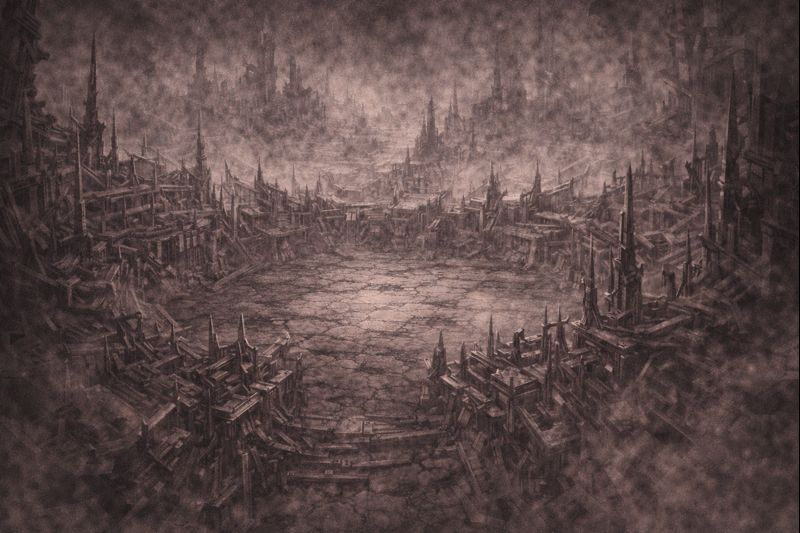
The Nexus did not shatter again.
It adjusted.
Iron lines bent through space,
dividing what had once stood together.
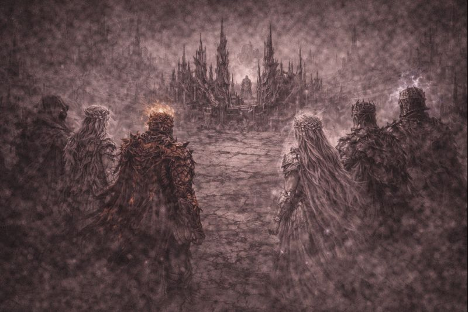
Seven remained on one side of the divide.
Close enough to see each other.
Far enough to feel the distance grow.
No one raised a weapon.
No one spoke.
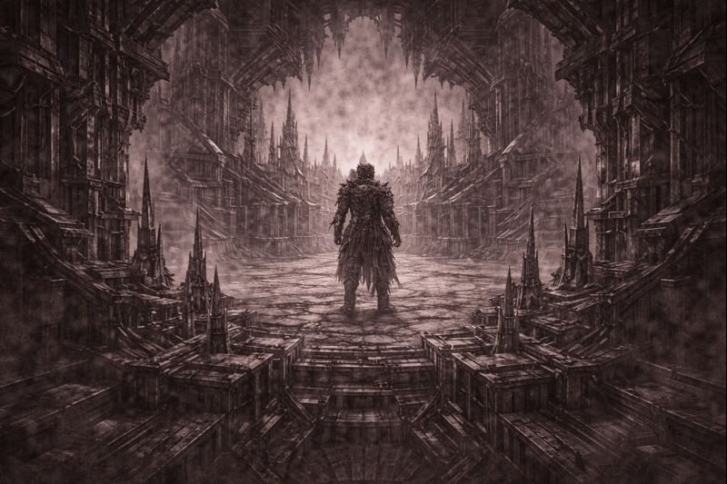
Ferron stood alone.
Not exiled.
Not cast out.
He had chosen the separation
the moment unity demanded compromise.
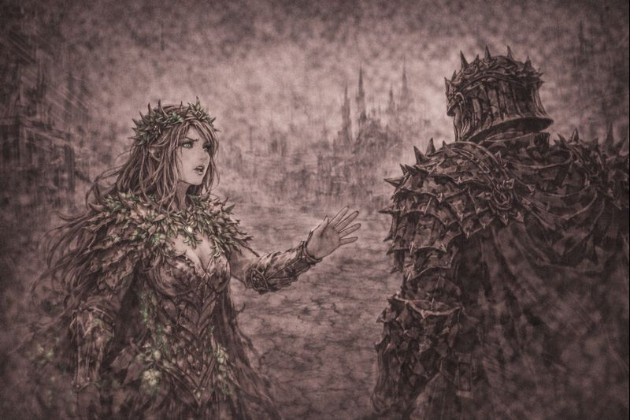
Verdani stepped forward first.
“This is not strength,” she said quietly.
“This is fear wearing armor.”
The iron did not move.
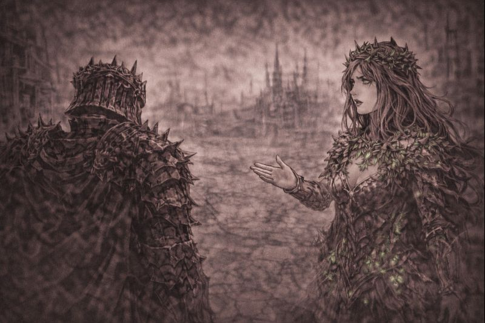
“Fear?” Ferron replied.
“No. Fear hesitates.”
“Fear doubts.”
“Fear asks permission.”
“I will not.”
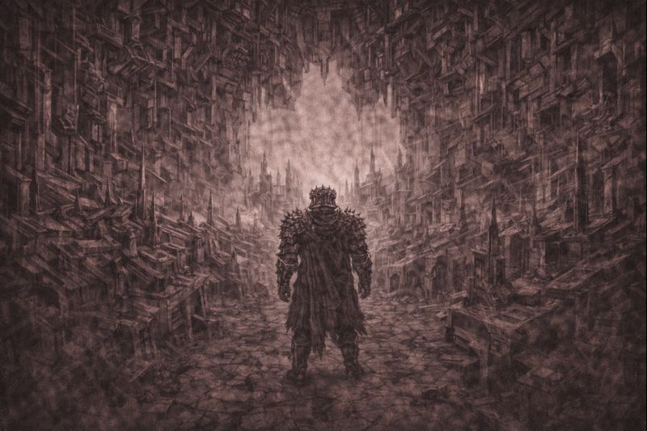
The iron completed its shape.
Plates locked.
Boundaries hardened.
Space itself obeyed.
This was not a prison.
It was a declaration.
✦ ✦ ✦
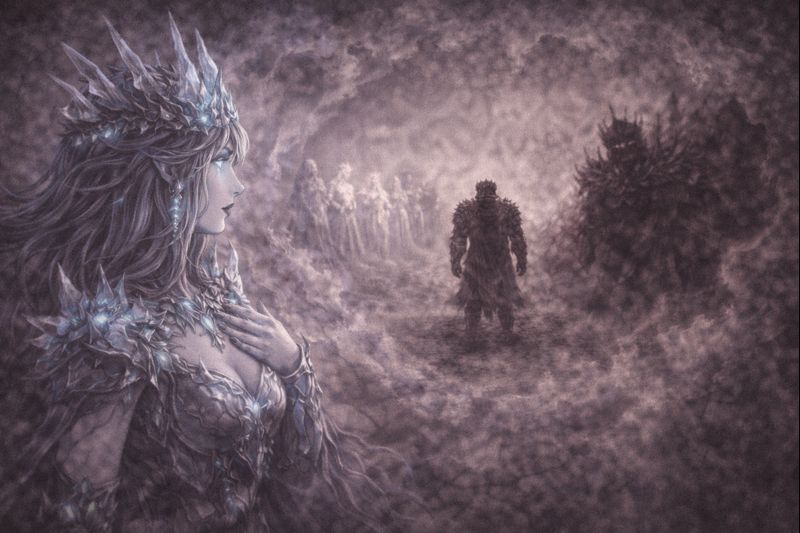
Aetheria staggered.
She saw futures folding inward.
Unity becoming rigidity.
Order becoming silence.
And something waiting beyond it all.
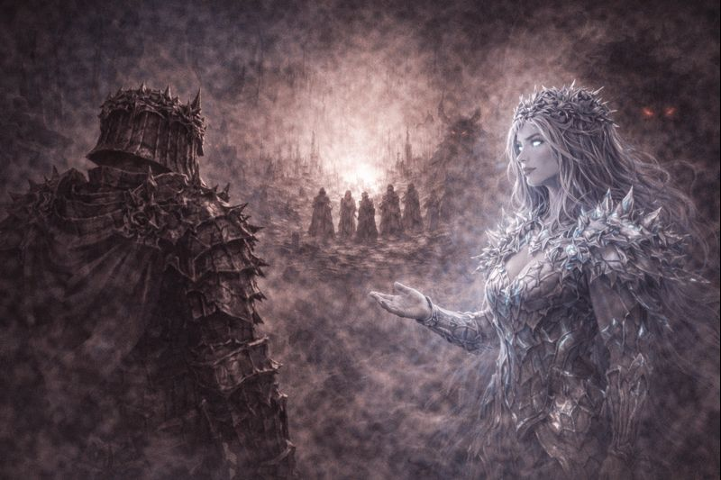
Morvus said nothing.
Shadow peeled away from the gathering,
retreating without resistance.
Some choices did not need witnesses.
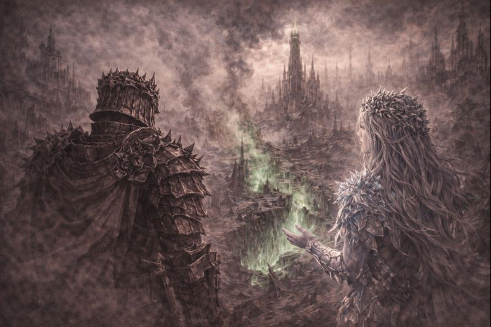
One by one, the Seven turned away.
Not in defeat.
Not in anger.
But with the weight of something
that could not be undone.
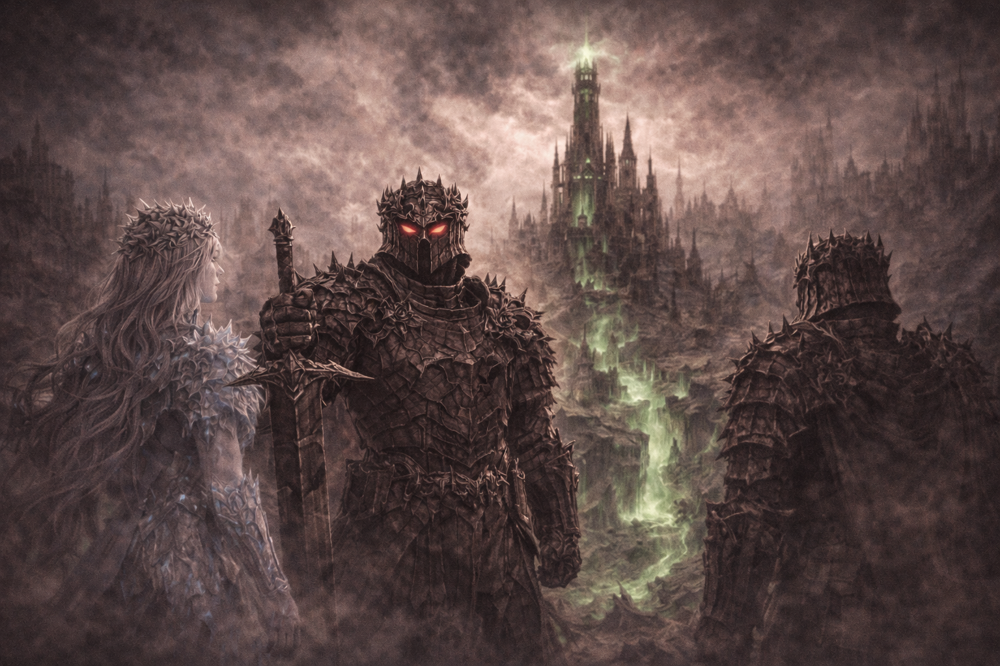
Ferron did not follow them with his eyes.
He watched the space they left behind.
Order had been secured.
And yet—
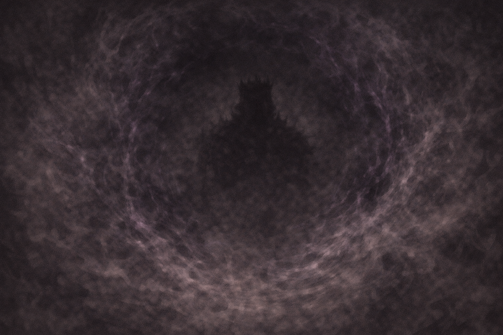
Somewhere beyond the Nexus,
something noticed the change.
Not with hunger.
Not with intent.
But with recognition.
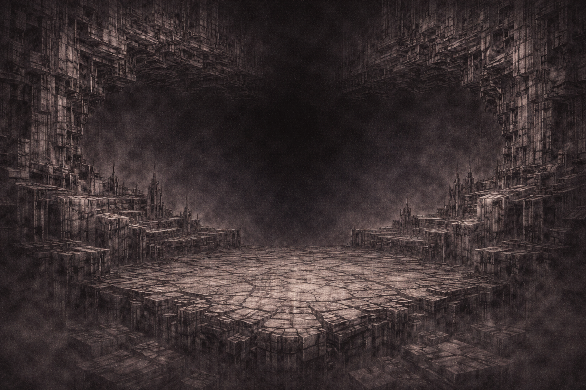
Ferron had not fallen.
He had not been corrupted.
He had chosen certainty over connection.
And the world would pay the difference.
✦ TO BE CONTINUED ✦